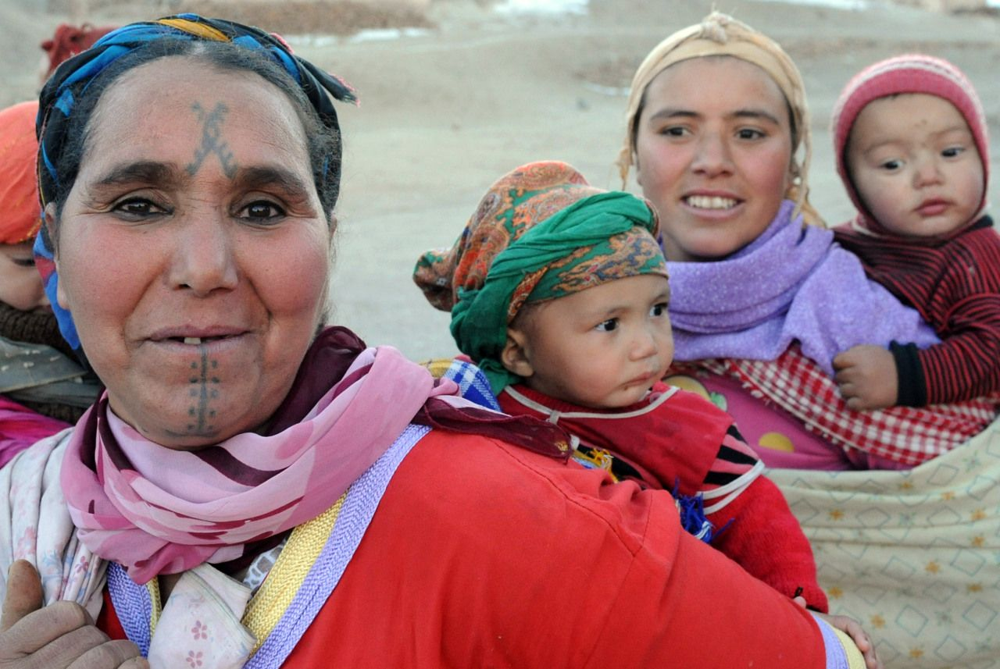
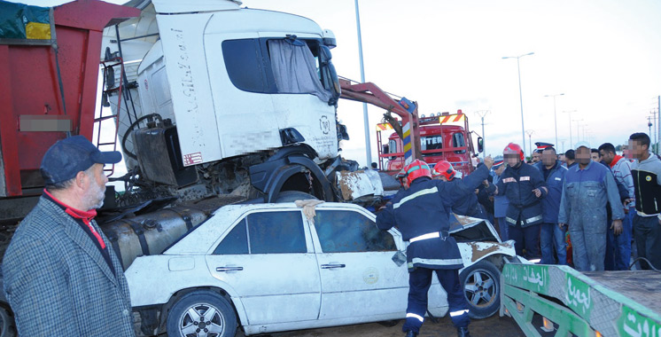
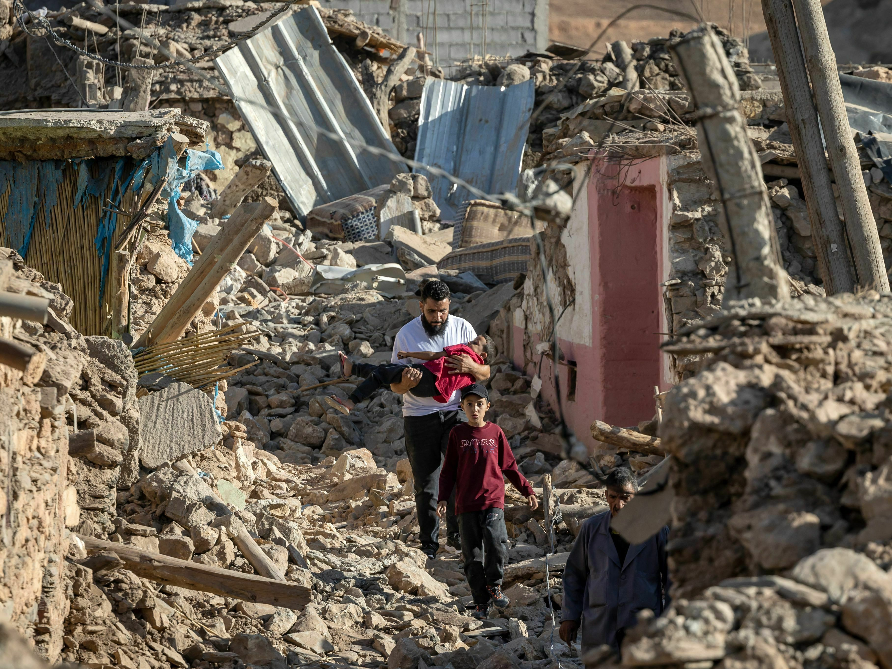
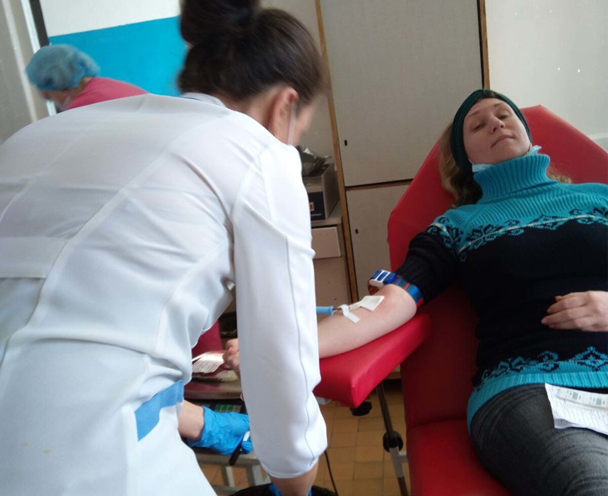
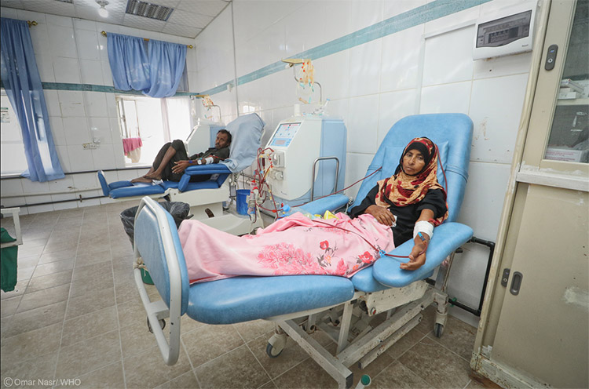

“Mes Enfants, Vous Remercient ! Vos Poches De Sang M'ont Sauvé La Vie.
”
Hémorragies
Fatima, mère de trois enfants, souffrait d'importantes hémorragies après une opération. Grâce aux dons de sang urgents de donneurs anonymes, Fatima a pu surmonter la crise et retrouver la santé. L'histoire de Fatima a incité de nombreux membres de sa communauté à donner régulièrement leur sang.
Fatima, 38 ans

“ Vos dons de sang ont sauvé ma vie.”
Accident
Je m'appelle Youssef, j'ai 25 ans, et j'ai été victime d'un grave accident de la route au cours duquel j'ai perdu beaucoup de sang. J'ai reçu 5 poches de sang qui ont permis de me sauver la vie. Grâce aux dons généreux de sang de personnes que je ne connais pas, les médecins ont pu sauver ma vie. Je tiens à exprimer ma profonde gratitude à tous ceux qui ont donné leur sang ; vous m'avez offert une nouvelle chance de vivre. J'encourage tout le monde à donner régulièrement leur sang, car cet acte humanitaire peut sauver de nombreuses vies. Merci du fond du cœur pour votre humanité et votre générosité.
Youssef Idirssi, 33 ans

“JE SERAI ÉTERNELLEMENT RECONNAISSANT ENVERS TOUS NOS DONNEURS”
Séisme D'Al Haouz
Je suis Saïd, originaire d'un village de la région d'Al Haouz, et j'ai survécu à un séisme dévastateur qui a frappé notre région. Gravement blessé, j'ai été transporté à l'hôpital dans un état critique après avoir perdu une grande quantité de sang. Grâce aux dons généreux de sang. Du fond du cœur, je remercie tous ceux qui ont donné leur sang et ont contribué à me sauver. J'encourage chacun à donner son sang régulièrement, car cet acte humanitaire sauve de nombreuses vies. Merci pour votre générosité et votre humanité.
Said, 41 ans

Maladie du Biermer
Quand j'ai reçu le diagnostic de la maladie de Biermer, ma vie a pris un tournant inattendu... J'ai été hospitalisée après un malaise et j'ai nécessité deux transfusions sanguines car mon organisme était incapable de régénérer et produire suffisamment d'anticorps. C'est à ce moment que j'ai réalisé que ma vie prenait un nouveau départ.
J'apprécie énormément la possibilité de partager mon parcours sur mes réseaux sociaux, car sans ce geste généreux, je ne serais plus là aujourd'hui. Je suis convaincue qu'une action aussi simple que celle-ci peut transformer radicalement la vie d'une personne pour toujours.
Amina,45 ans

Insuffisance Rénale
Lorsque le diagnostic d'insuffisance rénale a été posé, j'ai pris conscience de ma dépendance envers autrui pour ma survie. Le don de sang est pour moi un véritable secours, car il offre le soutien nécessaire à mon corps pour affronter les épreuves difficiles.
lham,45 ans